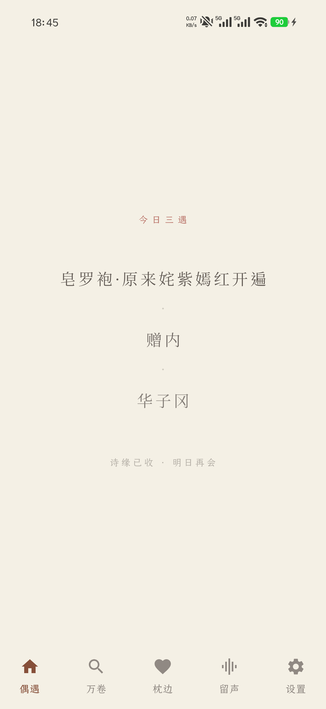
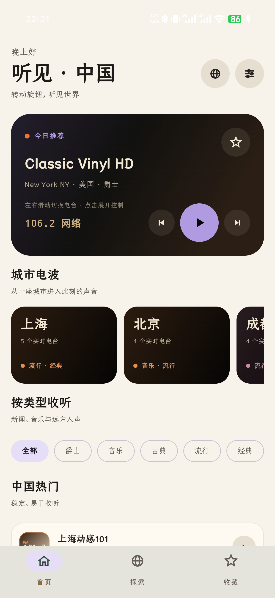

去留COME & GO
01 / 2026
去留 · 重看，而不是囤积
一款本地优先的照片与视频整理工具。通过逐组回顾、今日往年与明确的二次确认，把清理相册变成一次有节奏的重新观看。
- Android / Jetpack Compose
- 本地优先
- 照片叙事
FRONT-END ENGINEER · INDEPENDENT MAKER
你好，我是孟祥辉。长期从事 Web 与移动端研发，也在用 AI 重新探索一个人完成产品设计、开发与发布的可能。
查看最近作品 ↓RECENT VIBECODING PROJECTS
从日常真实需求出发，独立完成产品判断、交互设计、Android 开发与介绍页面。
01 / 2026
一款本地优先的照片与视频整理工具。通过逐组回顾、今日往年与明确的二次确认，把清理相册变成一次有节奏的重新观看。

02 / 2026
为古典诗词设计的安静阅读空间。以竖排阅读、诗人探索、收藏、朗读与桌面小组件，让文字回到更从容的节奏里。

03 / 2026
一台可以旋转与漫游的世界收音机。通过真实地理坐标探索全球网络电台，也能把收藏、最近播放和睡眠定时留在本地。
ABOUT
工作经历覆盖哈啰出行、饿了么、稀土掘金与攻壳科技。关注交互体验、工程质量，以及技术怎样真正进入人的日常。
查看完整简历